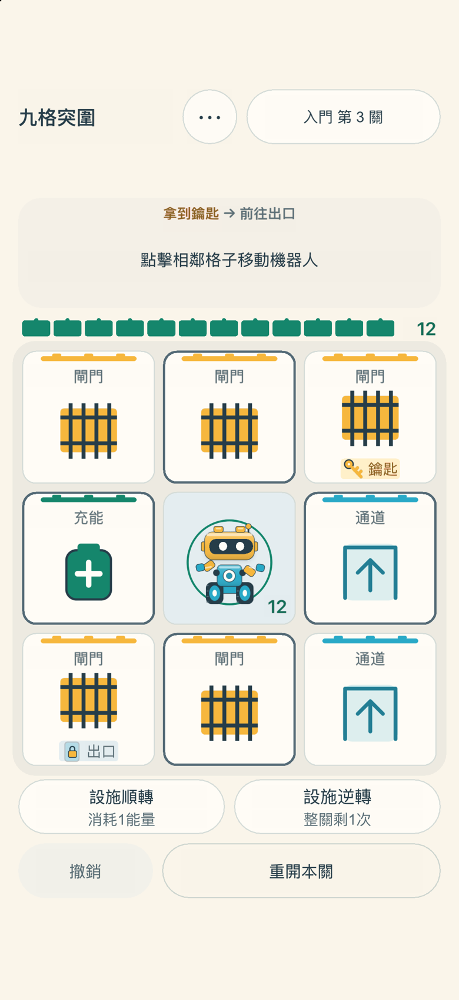
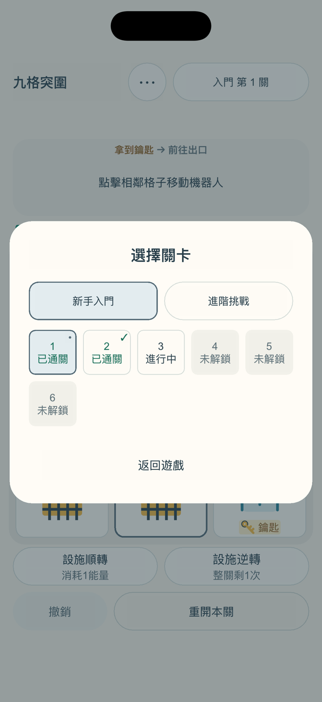
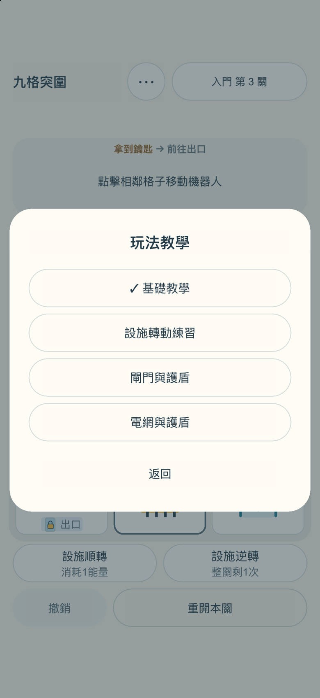
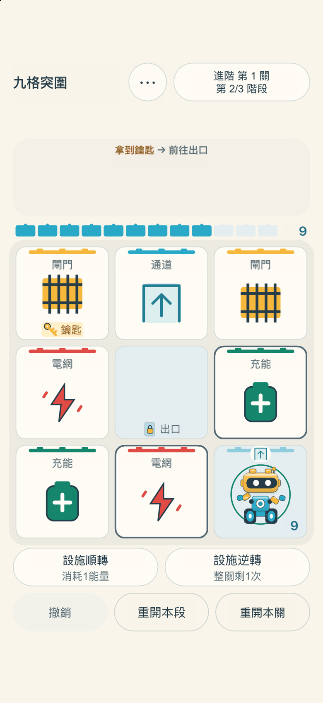
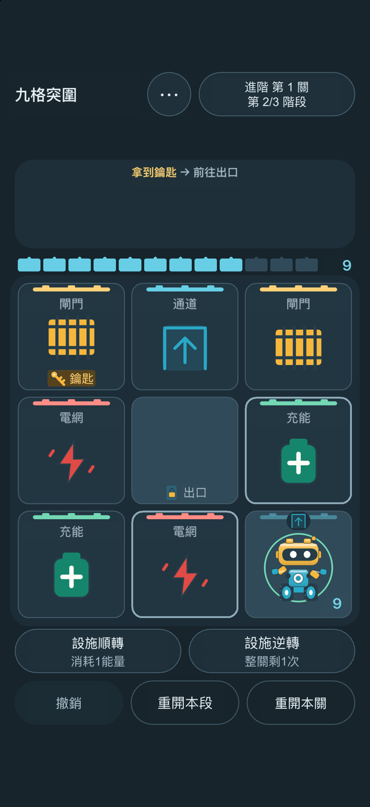
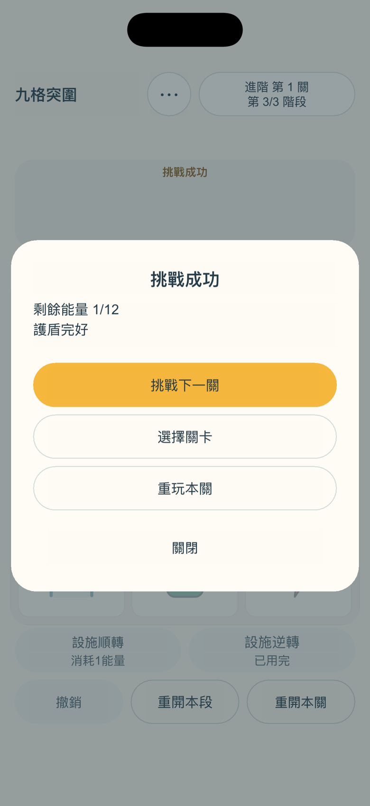

找到出路
輕點相鄰格移動。每段都要先拿鑰匙，再帶著剩餘能量抵達出口。

新手入門6關，每關1階段；進階挑戰27關，每關3階段，共33關、87個正式盤面。另有4項獨立玩法教學。
普通行動後，外圈設施順時針轉動。旋轉時機器人、鑰匙與出口保持原位。看清棋盤，再決定下一步。
輕點相鄰格移動。每段都要先拿鑰匙，再帶著剩餘能量抵達出口。
每關從12能量和一面盾開始。生效的充能格可以補充能量，並恢復護盾。
每關有一次不耗能量的逆轉。目前階段內隨時撤銷，重新推敲路線。
以下為 iOS 1.0.0（4）原生模擬器實際遊戲畫面。






6關新手入門皆為自由解謎，自己觀察並選擇行動；27關進階挑戰每關完成三段連續突圍。兩個系列分別開放第1關，之後各自逐關解鎖。
每關在本機保留最新對局，切換關卡也能繼續。無需帳號，沒有開發者雲端同步。
繁中、簡中、英文自由切換。淺色、深色或跟隨系統，聲音可在「更多」調整。
基礎教學、閘門與護盾、電網與護盾、設施轉動練習，4項獨立練習均可直接選擇。教學中從頂部「玩法教學」切換，普通關卡從「更多」進入；返回後繼續原對局。
iOS 版：4項教學、全部6關入門和進階第1關免費；一次非消耗型購買解鎖進階第2–27關，共26個三階段關卡、78個盤面，仍需逐關推進。無廣告、無訂閱，無需開發者帳號，支援家人共享及回復購買。已購關卡可離線遊玩，購買及回復需要連接 App Store。其他平台版本的開放方式可能不同。
遇到問題、有新的建議，或某個關卡讓你意外，歡迎聯絡我們。
移除廣告，改為可選的一次性購買解鎖完整進階挑戰；進階擴展至27關，另有6關入門及4項教學。完善設施轉動練習、首次跨段提示、機器人互動回饋與通關謝幕。